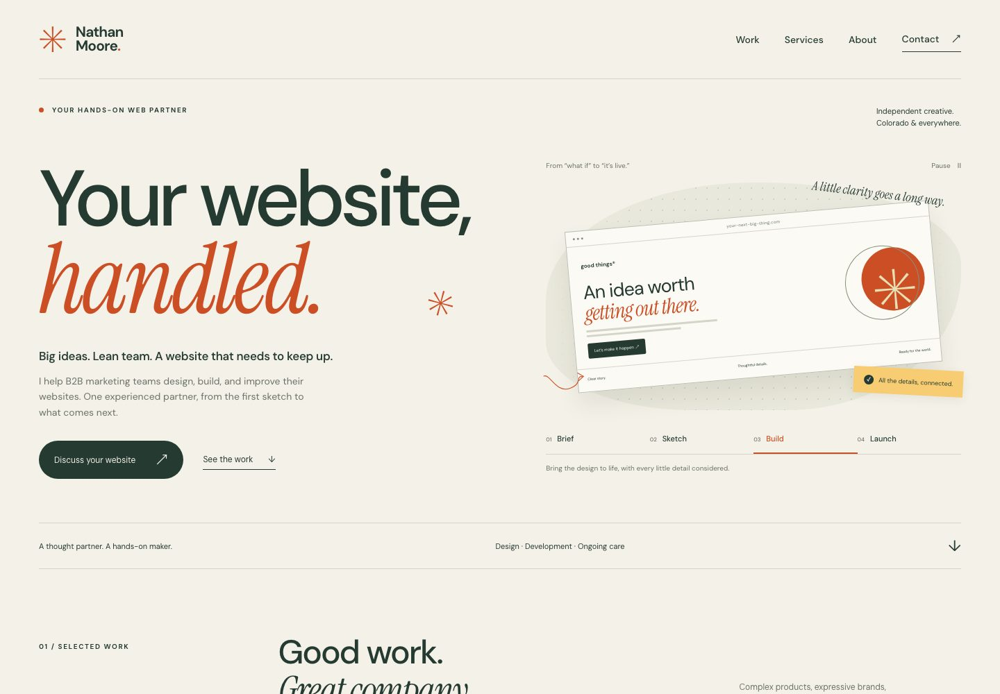

01 / WARM & ASSUREDRecommended foundation
The Working Partner
Calm confidence, generous typography, and a clear route from capability to conversation. The closest fit for an ongoing relationship with a marketing leader.
Try it: Move from Brief to Launch in the hero. Explore the project previews.
Explore this direction